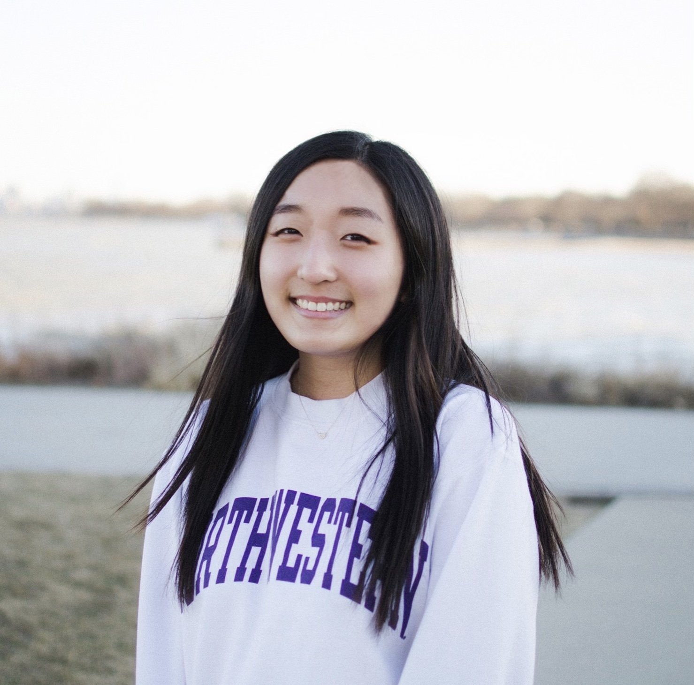

About Me
My name is Jamie (Yun) Lee, and I’m a senior at Northwestern University majoring in Learning and Organizational Change, minoring in Data Science, and pursuing certificates in Service Design and Integrated Marketing & Communications.
What drew me to all of my studies was my ever-growing interest in the human-centered approach to thinking and problem-solving. (I think it has a place everywhere.) I am always eager to collaborate, swiftly adapt to change, and learn constantly.
Things I love: practicing yoga (with varying levels of success), reading, eating ice cream, learning from TikTok, sweatpants, Christmas, breakfast food, experimenting with new recipes.
Things I don’t love: bugs, plants in my room (too many bugs), audiobooks, the price of airport water, ASMR, chocolate milk.